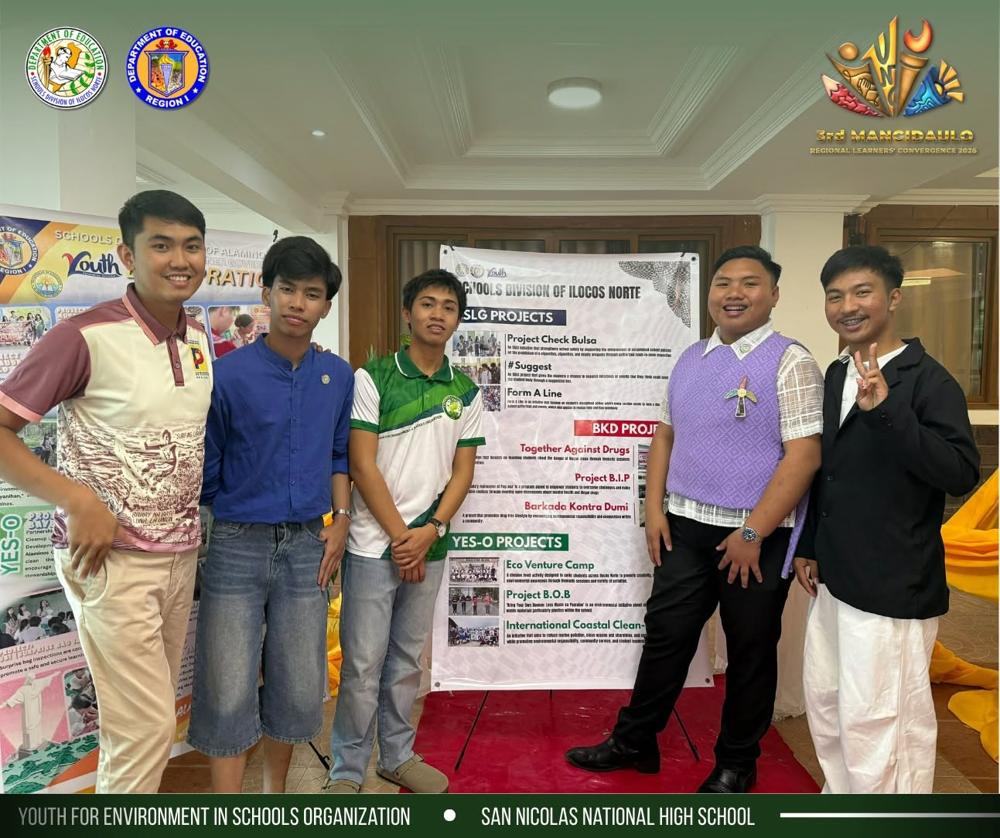

700+
kilograms of waste collected
 YES-O
YES-O
Youth for Environment in Schools Organization
The official digital home of YES-O, dedicated to environmental leadership, student action, sustainability, and meaningful change within the school community.
About the Organization
YES-O promotes environmental awareness, responsible leadership, and student-driven initiatives that encourage care for nature and the community.
Through campaigns, school programs, clean-up drives, tree-growing activities, and sustainability projects, the organization helps students take part in protecting the environment.
700+
kilograms of waste collected
50+
volunteers taking action for the environment
30+
trees planted and sustained
Our focus
An Environmental School Initiative Promoting Research
A year-round YES-O initiative joining student research, environmental learning, and practical action across San Nicolas National High School.

Student inquiry that turns environmental and community questions into evidence-based ideas.
Shared school and community action for cleaner spaces, less waste, and a greener campus.
Project SAVE!
An Environmental School Initiative Promoting Research — a year-round YES-O program at San Nicolas National High School.
How the initiative works
Students present work at the annual school research exhibit, then pursue division-level activities, the National Science Quest, and international opportunities. Environmental and community concerns are encouraged as research themes.
Sci-Gaw Kalikasan leads weekly campus clean-ups. Padyak para sa Kalikasan encourages bicycle commuting, while Bring Your Own Baunan (BOB) promotes reusable food containers. Activities also include waste segregation, recycling, gardening, greening, tree planting, and community clean-ups.
Open to all learners, with particular opportunities for Senior High School STEM and Junior High School STE students. YES-O works with the Science Department, school staff, MENRO San Nicolas, Accenture, families, local government, and community organizations.
Shared goals · Quality education · Sustainable communities · Responsible consumption · Climate action · Life on land · Partnerships
Leadership
The student leaders guiding YES-O’s environmental mission.
Our partners
Project SAVE! is made stronger by the people and organizations who give their time, leadership, and support.
Town and community engagement
MENRO helps lead environmental activities beyond the campus, including community clean-up drives and tree-planting efforts with residents.


Supplies and cleanup partnership
Accenture supports trash-collection activities with funded supplies and joins YES-O in coastal cleanups, including the International Coastal Cleanup (ICC).
Updates
A reminder that every student can become a protector of the planet through small but meaningful actions.
An MLBB themed event
A division wide camp that encourages every studednt in Ilocos Norte to engage and be an eco-warrior
Get Involved

Join activities, support environmental campaigns, or ask how to take part in Project SAVE! at San Nicolas National High School.
Contact YES-O
Follow YES-O for updates on student-led environmental activities, school programs, and Project SAVE!
Visit our Facebook page